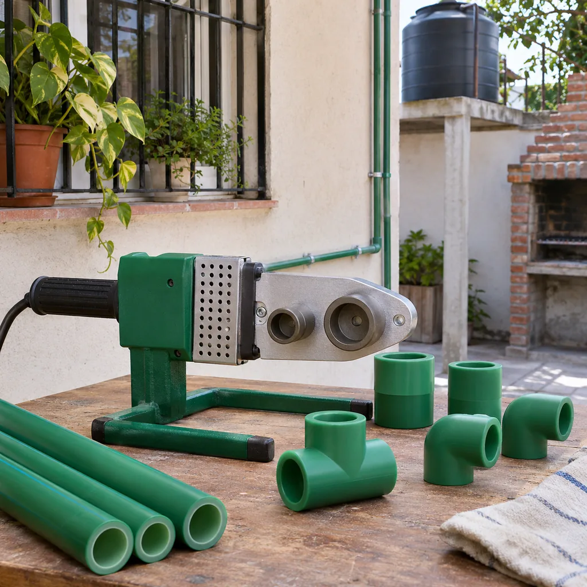
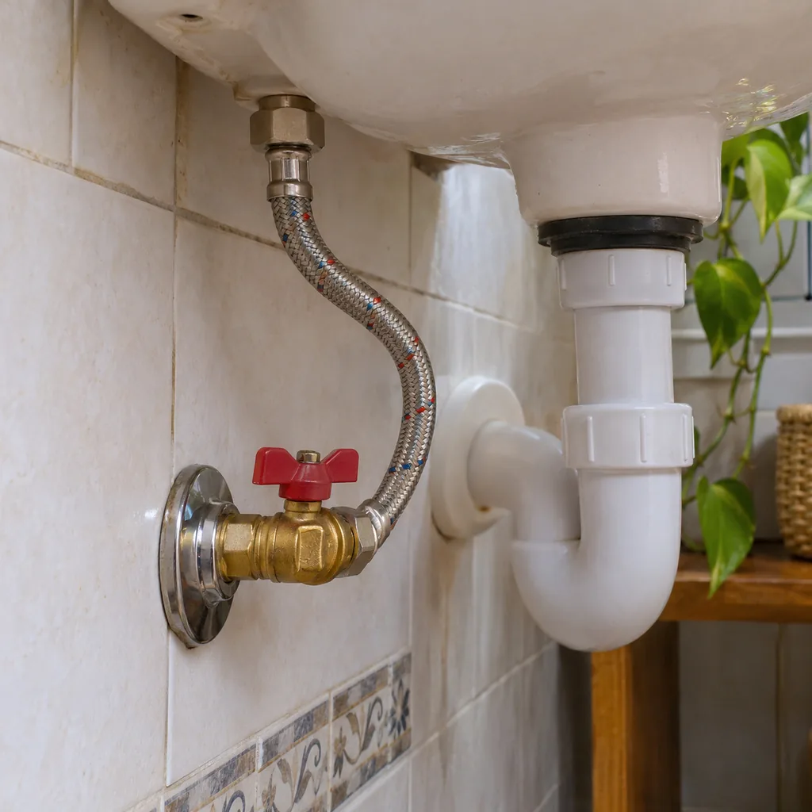
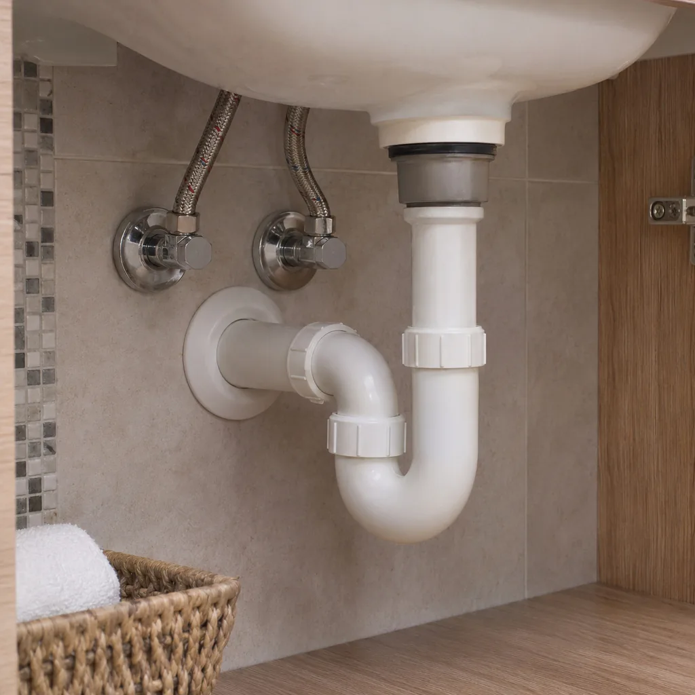
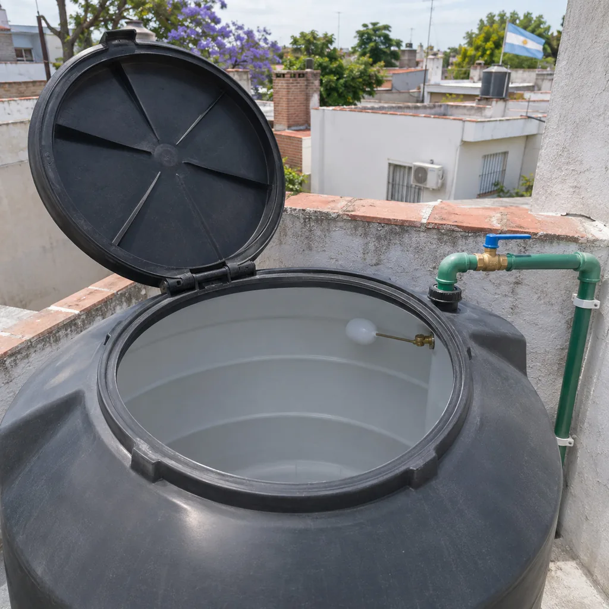
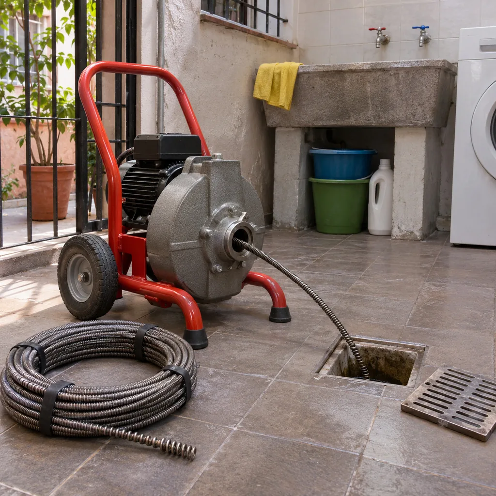
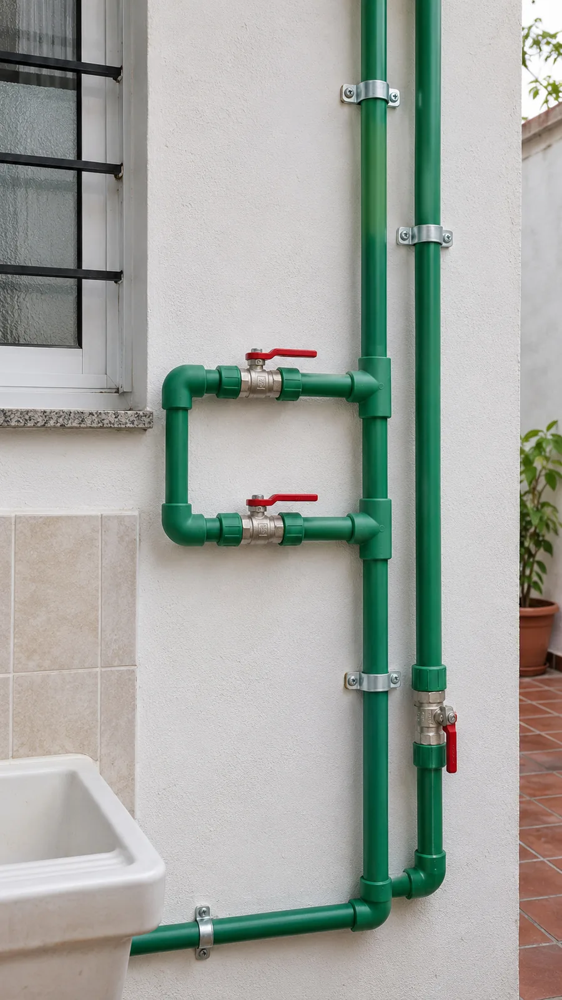
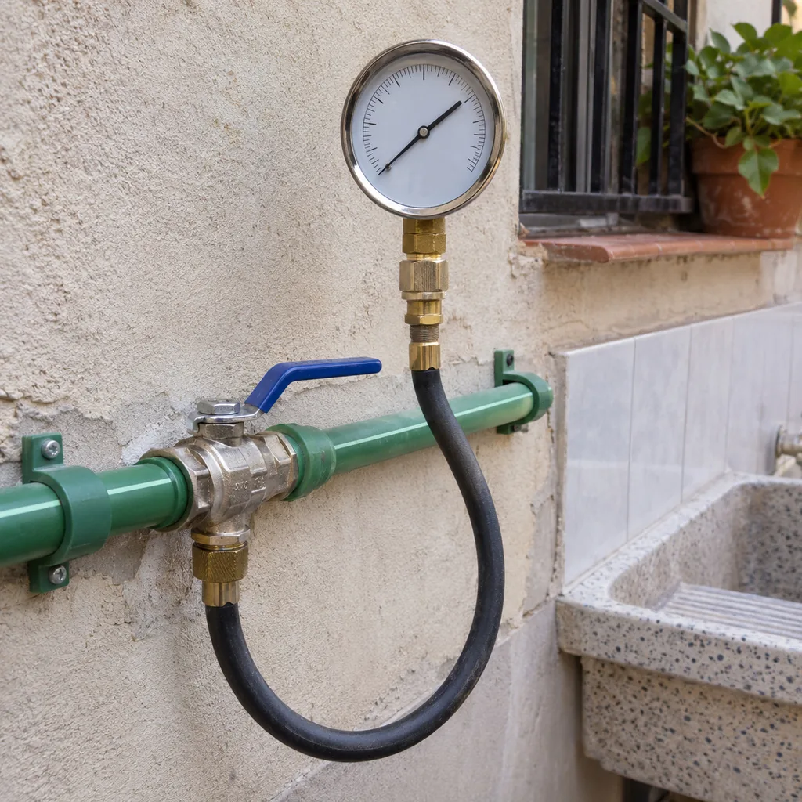
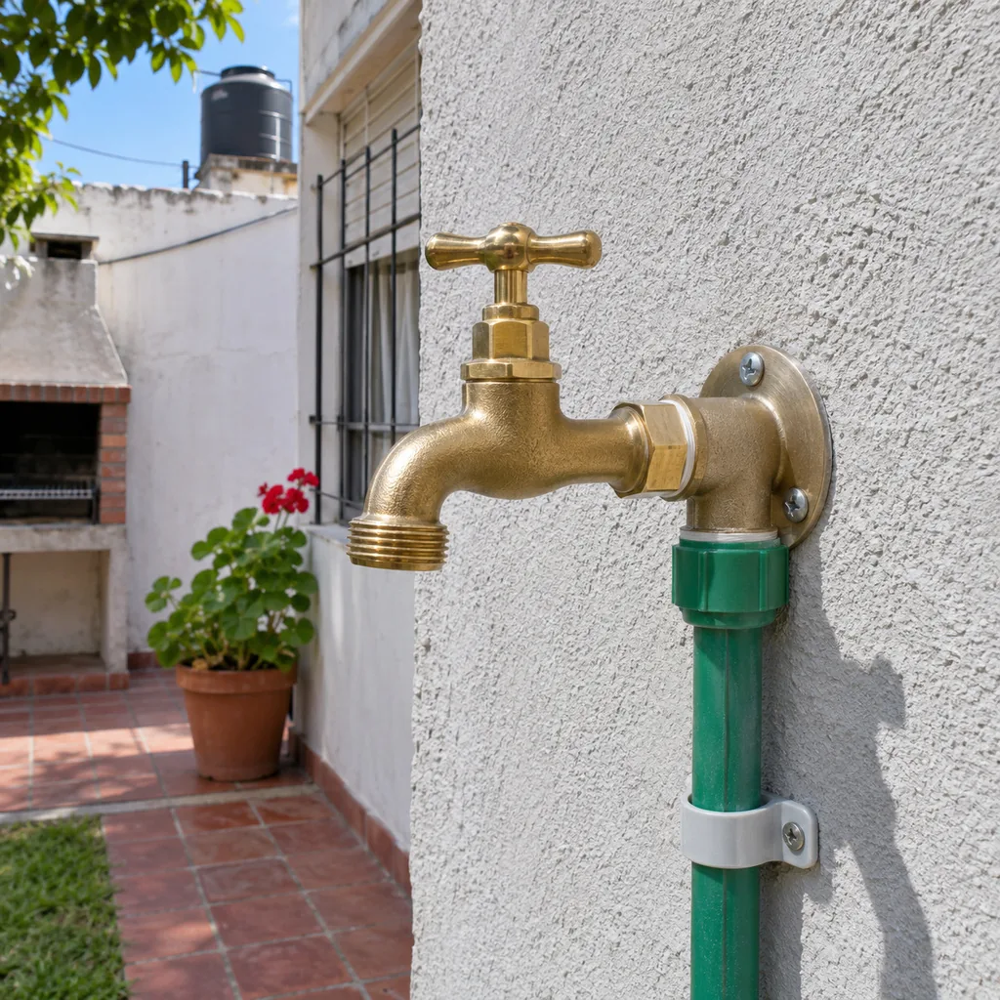
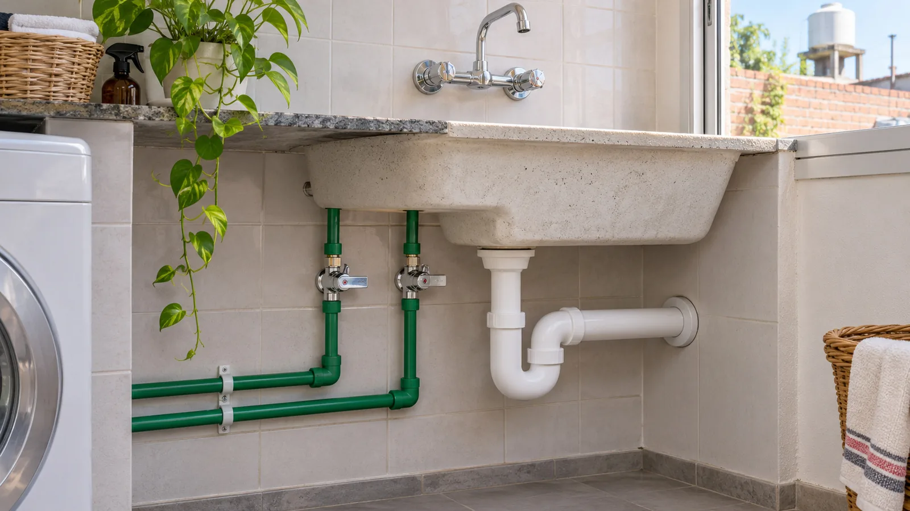

01 / INSTALACIÓN
Instalación de cañerías
Conexiones y tendidos de agua para nuevas instalaciones o renovaciones.
Consultá por instalación
EL OFICIO ESTÁ EN LOS DETALLESRÍO CUARTO · CÓRDOBA
Instalación y reparación de cañerías, limpieza de tanques y desobstrucciones. El agua, por su camino.
Trabajos garantizados
DEL ARREGLO A LA INSTALACIÓN

Conexiones y tendidos de agua para nuevas instalaciones o renovaciones.
Consultá por instalación
Revisión de pérdidas, uniones y conexiones para recuperar el funcionamiento.
Consultá por reparación
Limpieza del tanque y revisión de su estado como parte del mantenimiento.
Consultá por limpieza
Atención de desagües y cañerías tapadas para que el agua vuelva a circular.
Consultá por desobstrucción

JM · MANTENIMIENTO Y PLOMERÍA
Una pérdida, un desagüe que no baja o una instalación nueva. Contanos qué pasa y coordinamos cómo abordar el trabajo.
Reparar lo que falla.
Mantener lo que funciona.
Instalar
lo que necesitás.
SIN VUELTAS
Escribinos por WhatsApp. Una foto del problema y tu barrio nos ayudan a orientarnos.
Consultamos los detalles y acordamos la disponibilidad para revisar el trabajo.
El alcance, el presupuesto y la garantía se conversan según tu instalación.

QUE EL AGUA SIGA SU CAMINO.Instalación, mantenimiento y reparación de cañerías, limpieza de tanques de agua y desobstrucciones. Contanos qué necesitás revisar.
Describí el problema, indicá tu barrio y, si podés, compartí una foto por WhatsApp. El alcance y el presupuesto se coordinan según cada trabajo.
Sí, los trabajos son garantizados. Consultá el alcance de la garantía para tu reparación o instalación antes de comenzar.
En Río Cuarto, Córdoba. Escribinos con tu barrio para coordinar la visita y consultar disponibilidad.
RÍO CUARTO, CÓRDOBA
Hablemos de tu instalación. Consultá disponibilidad y presupuesto directamente con JM.

El mapa muestra la zona de atención, no un local comercial.
Zona de atención: Río Cuarto, Córdoba.